Zdjęcia Kotków

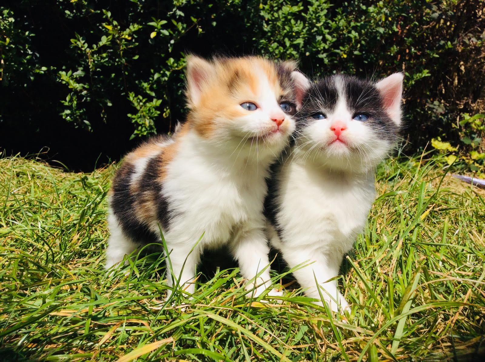


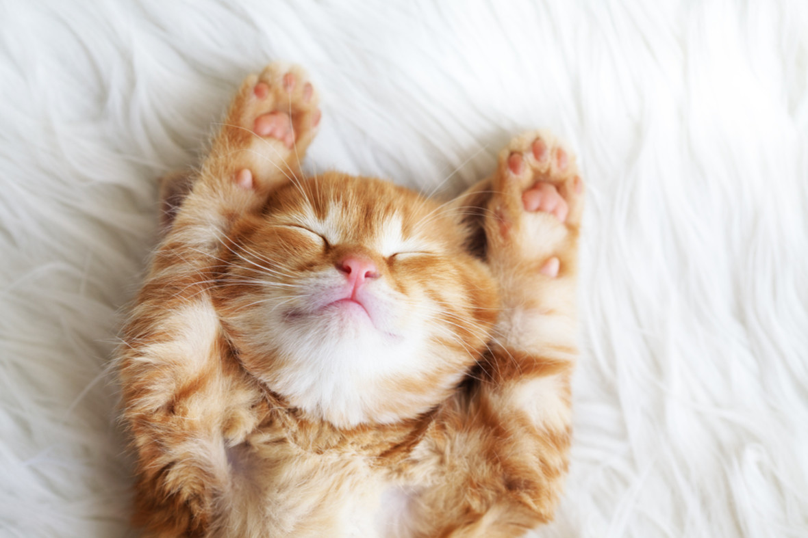
Zdjęcia kotków z CzaryMary Barbary

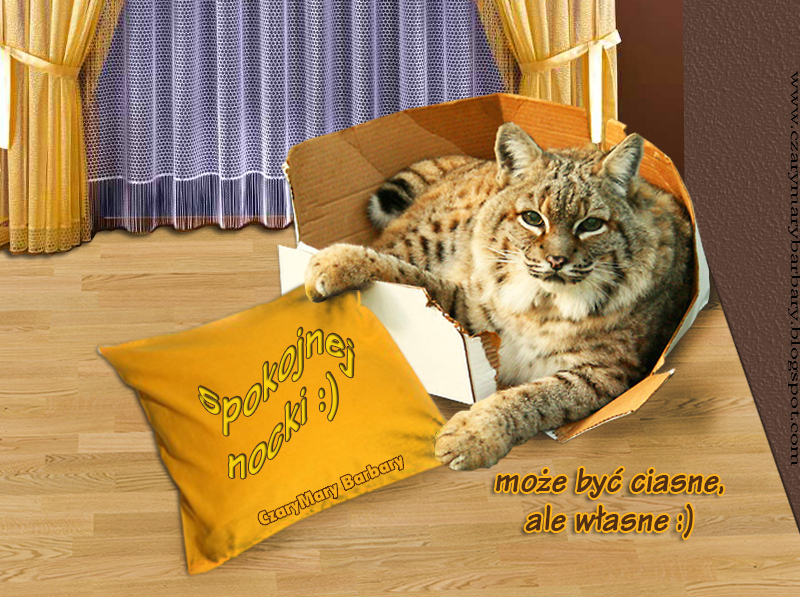
Kocie GIFy
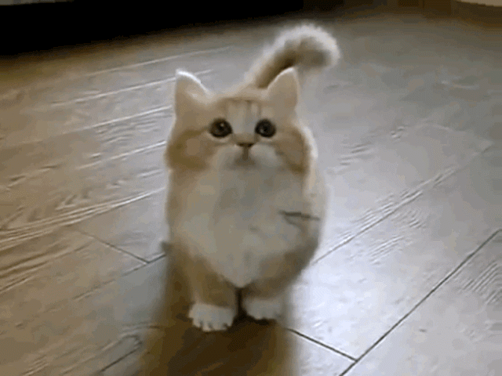
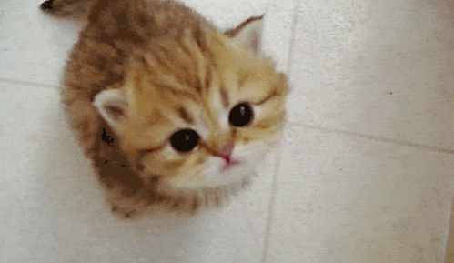
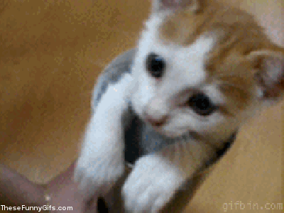


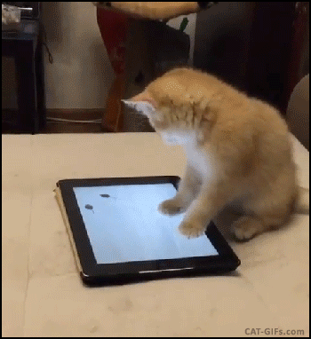
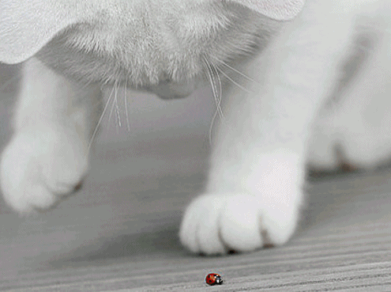
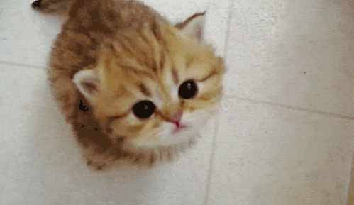
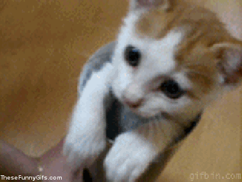
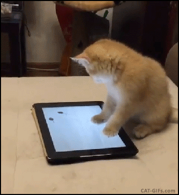
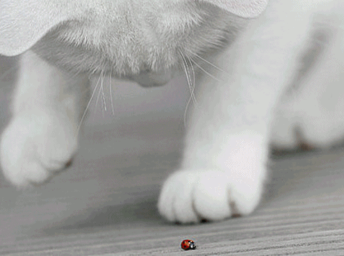
Kocie Filmiki
Linki o kotach
Kot na WikipediiKoty.pl
Koty na zooplus (z tamtąd też możesz kupić rzeczy dla kotów)
Kot na Wikipedii
KotoBlog na Githubie
KotoBlog v0.48-beta.2 został zaprojektowany i zrobiony przez Oliwiera Troć (2020 - 2020).